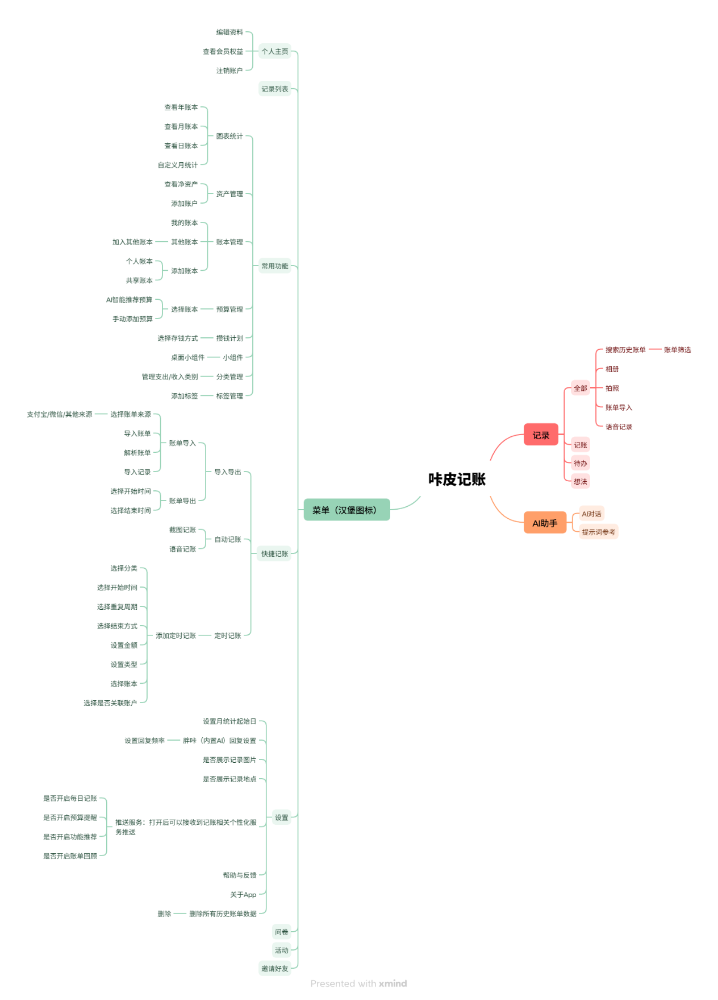
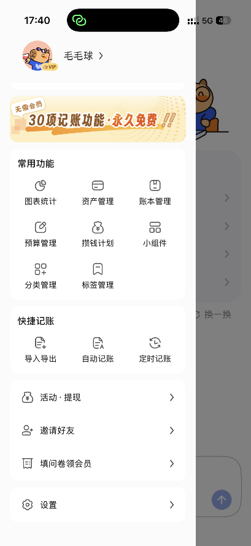
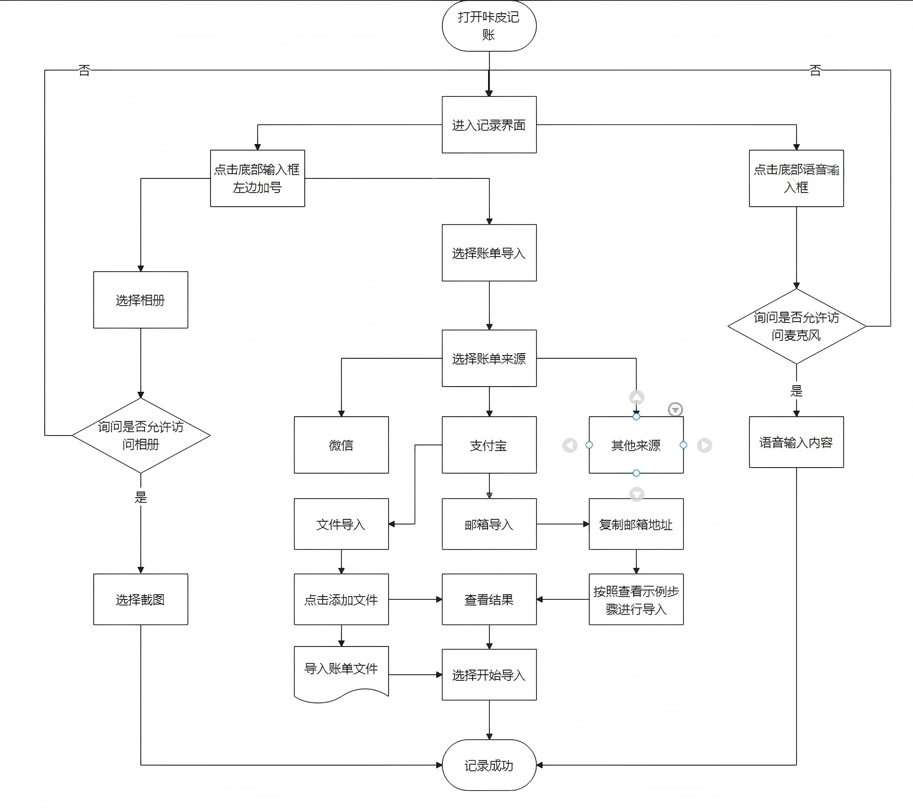
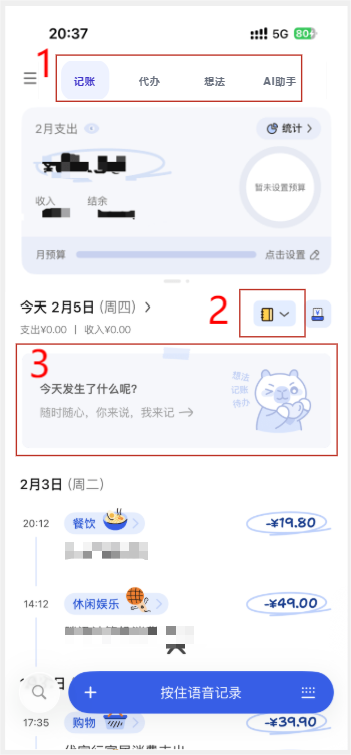
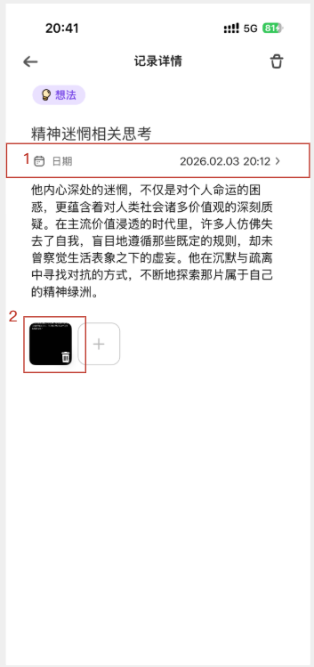

咔皮记账是商汤科技推出的AI原生财务Agent，主要针对于年轻人群体，包括大学生或者刚毕业几年的职场新人。咔皮记账以自动记账为核心功能，基于AI技术实现更便捷的记账体验。此外依托于商汤科技的大模型技术，咔皮记账的定位不仅是一个好用的记账软件，更是年轻人的第一款个人CFO（首席财务执行官）。基于AI功能创新，不仅挖掘转化了“想记账但觉得累”的大量潜在人群，还提供了AI财务分析相关的专属用户体验，创造了特有的增量市场。[i]
咔皮记账自2024年底发布以来，于2025年上半年实现了破百万的用户规模，人均每日会上线记录6笔消费，DAU年内增长400%，“咔皮记账”跻身细分赛道最快破百万用户应用之一。[iii]据量子位智库调查显示，咔皮记账已成为国内 AI 记账领域第一名，被评选为 "国内最受欢迎的 100 款 AI 产品" 之一。同时，咔皮记账在Apple Store上获得4.9分的好评。
不同于市面上现有的大部分记账产品，咔皮记账并没有在一开始或者在用户使用一段时间后就启动营收模式，这些模式包括但不限于：要求用户进行会员充值才能够使用其核心功能、通过推出内购提供一些个性化服务和在产品内部植入广告等。咔皮记账始终没有将用户与其核心功能之间隔开，根据咔皮记账小红书官方号的最新内容显示：其计划将核心功能（多途径记账功能、账本管理、分类管理、图表统计、预算管理、小组件、账单导入导出、定时记账等功能）永久免费开放给用户，而将增值服务（包括AI智能服务等功能）开放订阅，由用户按需选择。
这一商业路径的选择也更加符合产品核心价值定位：咔皮记账的核心定位在于成为年轻人第一款个人CFO，而只有当用户体验到本身产品基础的高效便捷之后，才会进一步考虑为后续更好的CFO功能进行付费体验，也帮助产品本身进行了目标用户的分类。
咔皮记账的主要功能区有三个：AI助手，记录，菜单（汉堡按键）。产品功能结构图如上图所示：

图表 1 咔皮记账产品功能结构图
由以上产品功能结构图可以看到，咔皮记账功能区的入口都比较易得。
图表 2 咔皮记账记录界面截图
图表 3 咔皮记账AI助手界面截图

图表 4 咔皮记账菜单界面
“记录界面”是目前产品的核心功能区，作为打开APP后首先呈现的界面，其界面相对简介，且操作按清晰明了，上手快。底部设有输入栏，用户可快速在“语音输入”与“照片输入”等记录方式之间快速切换，多模态进行记账。顶部设有选择切换按钮，可以在三种功能之间切换，方便用户快速使用App的核心功能。
“AI助手”是App内置的ai大语言模型，用户可以通过与AI助手对话，获取财务建议，为了帮助用户更好的快速上手，产品内置了推荐的提示词。然而可能是由于目前AI助手的功能开发不够完全，目前这板块的内容相对过于简短。
“菜单界面”是三个功能区中功能最多的。它通过 “常用功能” 和 “快捷记账” 分层聚合高频操作，让用户快速定位核心需求；顶部横幅强化 “永久免费” 的价值感知，底部运营入口包括邀请好友等

图表 5 用户相册/语音/账单导入的记账流程
咔皮记账的核心功能主要包括以下四个方面：1.自动记账 2.想法记录 3.待办提醒 4.AI财务分析
AI自动记账作为应用的基础，通过自动化流程解决了传统记账“难坚持、步骤多”的痛点。
典型使用场景：
咔皮记账将功能延伸到了记账之外，通过 OCR 技术为用户提供生活灵感与知识积累场景，实现非财务类信息的高效整理与保存，丰富产品的使用场景，同时帮助AI更好的分析用户特性，为用户提供更加合适的AI财务建议。
典型使用场景：
利用 AI 的语义解析能力，实现待办事项的自动化、智能化管理，既覆盖生活场景的待办提醒，将生活琐事转化为标准日。，又关联财务场景的关键节点提醒，成为用户的 “生活小助手”。
典型使用场景：
基于用户的记账数据进行深度挖掘与专业分析，从 “数据记录” 升级为 “价值输出”，为用户提供个性化的消费总结、理财建议和消费趋势预测，是产品提升核心价值、实现差异化的关键板块。也是符合咔皮记账的产品定位，即成为用户的私人财务助手。
典型使用场景：
咔皮记账的四大功能板块形成了 “基础记录—生活协同—数据分析—价值输出 的完整闭环：
以智能自动记账板块为数据基础，为 AI 财务分析提供完整、准确的消费数据，是后续个性化预算规划、超支预警、消费洞察的前提，确保了 AI 分析的专业性与针对性。
想法记录和待办提醒板块作为生活协同补充，延伸了产品的使用场景，提升用户打开率和粘性，同时待办提醒的财务场景功能反向为记账和财务分析提供了关键节点数据，让产品不再只 “懂用户的钱”，更 “懂用户的生活”，让财务建议更具温度与实用性。
AI 财务分析板块基于前面板块的全维度数据，实现从 “记录” 到 “分析” 再到 “指导” 的升级，为用户提供专业的财务价值，形成产品的核心竞争力。更重要的是，该板块正从 “被动响应查询” 向 “主动提供规划” 演进，比如提前提醒信用卡还款日、基于节日待办预判消费需求并调整预算，真正发挥 “个人 CFO” 的主动赋能作用，与传统记账产品的被动图表分析形成本质区别。
同时，快捷操作功能（iOS 双击背面、安卓悬浮球等） 作为通用配套能力，贯穿于自动记账、待办提醒等多个板块，最大程度缩短用户操作路径；桌面小组件则实现了各板块核心信息的桌面可视化，让用户无需打开 APP 即可查看账单、待办等关键信息，进一步提升了产品的使用体验和使用频率。而高频使用带来的更丰富数据，又反向优化了 AI 分析的精准度，形成 “便捷操作→高频使用→数据积累→精准分析→更愿意使用” 的正向循环，进一步巩固了整个功能闭环的稳定性。
在技术底层，咔皮记账依托于商汤“日日新（SenseNova）”多模态大模型。
| 版本号 < | 版本更新日期 < | 更新日志 |
|---|---|---|
| 0.9.70 | 2026年1月9日 | 1、小票机增加音效，支持选择打印日期 2、修复其他已知体验问题 |
| 0.9.60 | 2025年12月30日 | 1、账单导出功能上线 2、信用资产账户支持设置还款日、账单日 3、其他已知的体验问题优化 |
| 0.9.30 | 2025年12月10日 | 1、系统预设分类支持删除、改名、修改图标 2、小票机上新，打印你的当日消费小票吧 3、首页卡片升级，信息展示更直观清晰 |
| 0.9.20 | 2025年12月1日 | 1、资产账户支持置顶展示特别关注资产账户 2、借贷账户完善支持更多信息 3、手动记账中增加“转账”类型直接记账 |
| 0.9.10 | 2025年11月24日 | 1、定时记账功能上线，周期性记账任务一次搞定，真方便 2、搜索增加强大的筛选器，搜索入口更明显 3、修复其他体验问题，强烈建议升级 |
| 0.9.00 | 2025年11月17日 | 1、图表统计查看账单列表优化 2、侧边栏增加分类管理入口 |
| 0.8.92 | 2025年11月10日 | 1、自动记账增加控制中心记账专属指令 2、图表统计增加收支结余表格 3、账单导入支持批量修改账本和资产账户 |
| 0.8.91 | 2025年11月6日 | 1、分类支持自定义添加分类 2、分类的识别规则可以自己设定 3、新上连续记账7天瓜分超级奖励活动，助你养成记账好习惯 |
| 0.8.90 | 2025年11月3日 | 1、分类管理支持自定义添加、删除分类 2、分类自定义识别规则小范围测试中 3、标签管理支持修改、删除标签 4、图表统计优化，大额数字支持显示准确值 |
| 0.8.80 | 2025年10月22日 | 1、优化智能预算，增加日预算日历 2、优化其他已知的体验问题 |
| 0.8.63 | 2025年10月2日 | 1、优化了智能预算流程 2、优化了其他已知体验问题 |
| 0.8.62 | 2025年9月30日 | 1、优化自动记账快捷指令，记账速度更快 |
| 0.8.60 | 2025年9月23日 | 1、新分类+多标签，新组合更灵活，分批测试中 2、优化其他已知体验问题 |
| 0.8.53 | 2025年9月22日 | 1、上线“攒钱计划”，和支付宝小荷包合作真攒钱 2、修复了一些其他的已知问题 |
| 0.8.20 | 2025年8月20日 | 1、记账后AI评论增加频率设置 2、新用户引导流程优化 3、侧边栏增加记录日历以及样式优化 4、账单导入优化，导入流程更清晰 5、其他体验优化 |
| 0.8.10 | 2025年8月7日 | 1、记录页面第二屏增加搜索入口 2、点击自动记账弹窗快速修改这笔账单 3、记录页面预算区域增加日预算进度显示 |
| 0.8.00 | 2025年7月23日 | 1、优化时间轴上日期显示样式 2、优化了其他一些体验问题 |
| 0.7.42 | 2025年7月17日 | 1、记录首页增加侧边栏，找到更多功能现在更方便 2、账单导入进度显示更准确，觉得慢也可以一会儿回来再看，现在导入进度不会断 3、不喜欢某一张卡片？点击卡片右上角的“对勾”，这张卡片今天不会再出现 4、优化了其他体验问题，等你慢慢发现 |
| 0.7.41 | 2025年7月9日 | 支持手动选择分类和填写金额的记账方式，支持手动记账和AI记账快速切换 |
| 0.7.35 | 2025年6月26日 | 1、新增共享账本，快和你的TA一起记账吧 2、优化其他体验问题 |
| 0.7.34 | 2025年6月22日 | 1、新增桌面小组件，无需打开应用即可速览今日消费、预算进度等核心财务数据 2、首页新增AI大卡片，为您智能生成昨日总结、每日手账、每周来信 3、优化了其他体验问题 |
| 0.7.32 | 2025年6月6日 | 1、分类可以自定义，分类支持新增、删除、移动 2、记录页可以看历史账单，一直划一直看 |
| 0.7.30 | 2025年5月30日 | 1、支持自定义分类 2、优化部分体验 |
| 0.7.21 | 2025年5月22日 | 1、输入框新增「+」按钮，支持快速上传图片、拍照、导入账单 2、优化部分体验 |
| 0.7.20 | 2025年5月21日 | 1、时间线上可以直接看大图了 2、编辑后保存更方便了 3、修复了其他体验问题 |
| 0.7.10 | 2025年5月15日 | 1、新增资产管理 2、其他体验优化 |
| 0.7.00 | 2025年4月30日 | 1、新增AI回复，记账不孤单，可爱胖咔陪你聊聊天 2、新增支持记账之外的一些内容，还可以记待办、记想法、记心情 3、优化了其他体验问题 |
| 0.6.10 | 2025年4月16日 | 1、历史记录页面支持在任意一天进行账单补记了 2、历史记录页面支持“账单搜索” 3、个人中心变得更好看了 |
| 0.6.00 | 2025年4月2日 | 1、增加AI智能预算，AI帮你做月预算、日预算 2、增加胖咔每周来信，胖咔给你的每周问候 3、导入账单支持更多账单了 4、增加多种趣味小测试，等你来发现 |
| 0.5.00 | 2025年3月26日 | 1、新上线了多账本，可以添加非常多个账本 2、账单导入，新增支持微信和支付宝账单专属邮箱导入方式 3、修复了其他体验问题 |
| 0.4.10 | 2025年3月12日 | 自动记账优化、新增自定义月统计起始日、图表分析支持查看分类详情，还有多项体验优化，等你来发现！ |
| 0.4.00 | 2025年3月3日 | 自动记账优化、新增分类预算、支持账单导入、洞察全面升级，还有多项体验优化，等你来发现！ |
| 0.3.20 | 2025年2月17日 | 优化加载体验,记账更流畅 - 洞察页展示AI 思考过程 - 视觉升级,界面更清爽 |
| 0.3.00 | 2025年1月18日 | - 新增”自动记账”功能，记账更便捷啦！ - 其他功能体验优化，修复了一些已知问题，谢谢宝宝们的反馈(＾－＾)V |
| 0.2.00 | 2024年12月30日 | -功能体验优化，提升使用流畅度与便捷性~ -新年活动正式上线，宝宝们快来许愿，咔皮送精美新年贺卡和VIP福利~ |
| 0.1.10 | 2024年12月9日 | - 提升了APP性能，并优化了用户体验 - 谢谢宝宝们的反馈，咔皮会努力做的更好呀(#^.^#) |
（数据来源：七麦网站）
上表中最重要的几个更新已用红字标注起来，可以看出咔皮记账迭代的重心是围绕在便利用户记账流程，提供财务管理功能，精细化运营等方面。上线自动记账、定时记账、账单导入导出、共享账本等主要为了降低用户记账门槛、提升记账效率，增强用户粘性；提供财务管理功能部分上线了AI智能预算、资产管理、与支付宝合作等；精细化运营方面上线了攒钱计划、AI互动回复、胖咔每周来信、桌面小组件等。
咔皮记账目前的商业模式主要是由两部分构成：内部订阅服务+交易佣金
1. 内部订阅服务：不同于市面上现有的大部分记账产品，咔皮记账并没有在一开始或者在用户使用一段时间后就启动营收模式，这些模式包括但不限于：要求用户进行会员充值才能够使用其核心功能、通过推出内购提供一些个性化服务和在产品内部植入广告等。咔皮记账始终没有将用户与其核心功能之间隔开，根据咔皮记账小红书官方号的最新内容显示：其计划将核心功能（多途径记账功能、账本管理、分类管理、图表统计、预算管理、小组件、账单导入导出、定时记账等功能）永久免费开放给用户，而将增值服务（包括AI智能服务等功能）开放订阅，由用户按需选择。
这一商业路径的选择也更加符合产品核心价值定位：咔皮记账的核心定位在于成为年轻人第一款个人CFO，而只有当用户体验到本身产品基础的高效便捷之后，才会进一步考虑为后续更好的CFO功能进行付费体验，也帮助产品本身进行了目标用户的分类。
2. 交易佣金：目前咔皮记账与支付宝的小荷包进行了合作，推出“攒钱计划”。从中可以收取一定的推广佣金。未来也可以考虑与其他理财产品进行合作，使用户能够关联到其他的资产，即优化用户体验，也能够帮助产品进行推广盈利。
图表 6 咔皮记账原本首页布局

图表 7 修改后首页布局
图表 8 咔皮记账原“想法”详情页

图表 9 咔皮记账修改后想法记录页面
当前咔皮记账仍处于“基础工具完善期”，核心聚焦基础记账功能的优化的修复，如系统适配、数据统计、操作体验等，用户价值仍集中在“便捷记账、资产管理”的基础层面。此阶段的核心矛盾是“产品基础体验不完善”与“用户多元化需求、商业化探索”之间的差距，但这也是发展的前期铺垫期，需先解决基础功能痛点，积累核心用户，才能逐步延伸增值服务、探索盈利路径。
未来趋势：咔皮记账将逐步从“基础记账工具”向“AI驱动的综合性个人财务管理平台”转型，盈利模式将摆脱单一化， 主要依靠“免费基础功能+付费增值服务+金融产品联动”模式进行盈利，具体呈现三大趋势：
总之，抛开AI功能，咔皮记账能够获得成功的关键还是在于是否能够获取用户的第一手财务数据，从而为用户提供真实有效的财务建议。